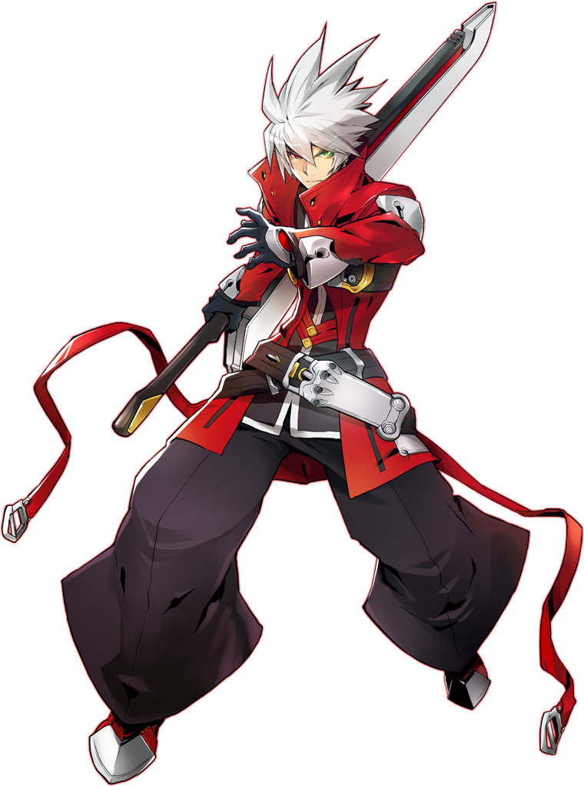

Ragna The Bloodedge
← BBCF
拉格纳是一个非常适合新手的压制型角色。他拥有应对多种局面的手段，包括优秀的中距离poke(5B)和灵活多面的特殊招式。
拉格纳的具有独特的吸血机制：连续命中D系可为拉格纳恢复生命值，这在一定程度上弥补了他低于平均水平的生命值。
拉格纳的Overdrive会进一步增强吸血效果并强化他的D系，从而解锁更优秀的连段路线，大幅提升他的吸血能力和伤害。
拉格纳在中距离表现最为出色，可以充分发挥其poke能力；一旦近身，他便能施加稳固的压制，将对手牢牢锁死。
拉格纳可以采用简单而有效的战术，在深刻理解游戏机制的玩家手中更能大放异彩。

HP10000
Back Dash22f(1~5f FullInv,
2~15 airborne)
2~15 airborne)
Pre Jump4f
Fastest Attack5A(5f, whiff on
crouchers)
2A(7f)
crouchers)
2A(7f)
Reversal
(j.)623C9f/j.5fFull Inv.
623146D13~25fFull inv.
优势
- 简单有效的战术：拉格纳的整体对局计划是相当简单的，这使得他成为了无论新手还是熟练玩家都可以快速上手并进入对局的角色
- 较高的均火：拉格纳在绝大多数起手下都可以打出优秀的火力，这让他拥有相当的威慑力。
- "Soul Eater"：拉格纳的D系拥有吸血的能力，这让他能够更有效的将连段转换为血量上的优势。
- 全能：拉格纳拥有不错的进攻工具，同时他的防守选项也较为全面，这让他不会陷入完全无计可施的境地。
劣势
- 难以近身：尽管拥有一个可以被认为是相当强势的5B，但这不能掩盖拉格纳整体缺乏机动能力与破防手段的问题。尽管拉格纳火力较高，但如何摸到人和如何破防将会成为一道难题。
- 低血量：虽然拉格纳拥有"Soul Eater"这样可以恢复血量的能力，但其恢复的值并不取决于你的伤害而是招式本身的数值和你的连击数。因此拉格纳本质上是一个相对脆弱的角色，面对高火力角色时容错率较低。
角色总结
拉格纳是一个高下限，但上限不够高的压制型角色。
他拥有你需要的一切工具：无敌升龙，不错的推板，优秀的均火，不错的中段，尚可的对空；同时还拥有易于上手的连段和简明的连段理论路线。
尽管他在各方面都不错，但是缺乏强大的机动手段是他的硬伤。在这个前提下，他的拳脚尽管距离不算近，却也显得有些捉襟见肘。
比起顶级角色，他缺乏的不是稳定的下限，而是一个足够高的上限。
Players to Watch
Need further information?
→ Dustloop Wiki